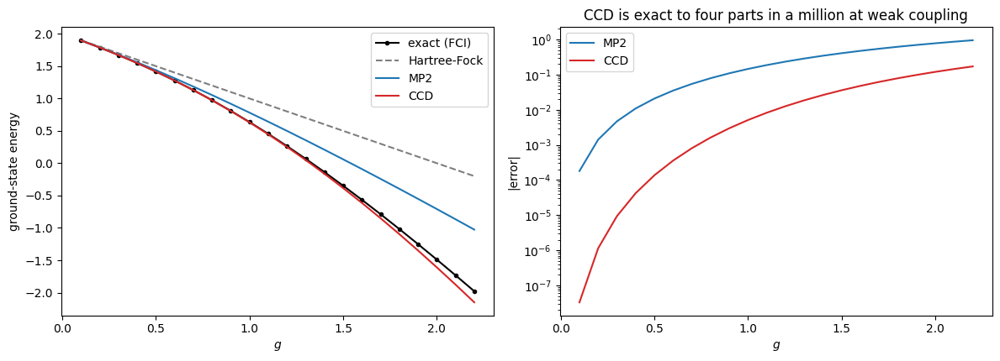
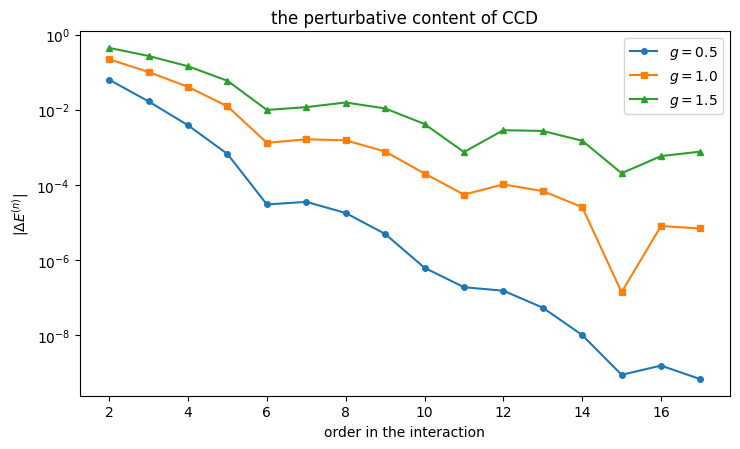
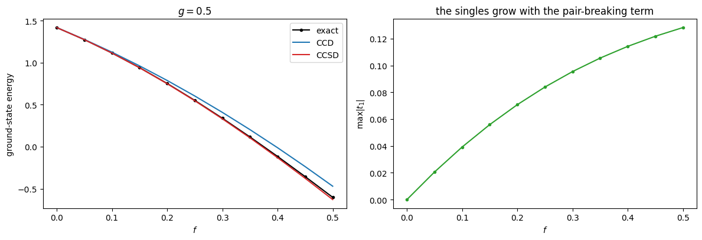
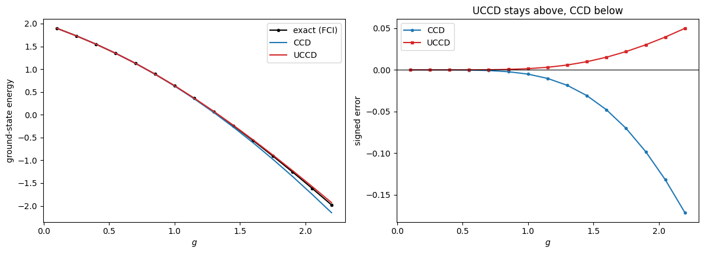
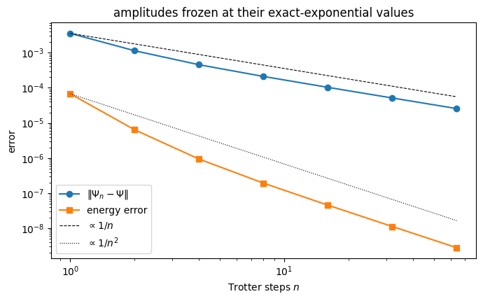

11. Coupled cluster theory#
Companion notebook to Chapter 10 of Quantum mechanics for many-particle
systems. Every number quoted in the chapter is produced here; the code is
the same as in BookManybody/BookMaterial/Programs/coupledcluster.py.
The ansatz is a single change from configuration interaction:
Requiring \(\overline H = e^{-\hat T}\hat H e^{\hat T}\) to have the reference as an eigenstate gives
Contents:
Validating the solver
The pairing model
What coupled cluster contains, order by order
When singles matter
Size extensivity
Everything against everything
import sys, os
import numpy as np
import matplotlib.pyplot as plt
sys.path.insert(0, os.path.join("..", "BookManybody", "BookMaterial", "Programs"))
import coupledcluster as cc
np.set_printoptions(precision=6, suppress=True, linewidth=120)
11.1. 1. Validating the solver#
Four checks: the models must reproduce the exact energies of Chapters 4 and 7; the singles must vanish for the pairing model; the first iteration must be MP2; and the Hartree-Fock rotation must leave the exact energy alone while making \(f_{ia}\) vanish.
cc.demo_validation()
==========================================================================
1. Validating the solver
==========================================================================
Everything below rests on the equations being right, so we check
them first, in four ways.
(i) The models must reproduce the exact energies of the earlier
chapters. The pairing model against Table 4.2:
g E_ref FCI here chapter 4
-1.00 3.00000 2.77987014 2.77987014
-0.50 2.50000 2.43688426 2.43688426
0.00 2.00000 2.00000000 2.00000000
0.50 1.50000 1.41677428 1.41677428
1.00 1.00000 0.63554847 0.63554847
(ii) For the pairing model the interaction cannot connect the
reference to a 1p-1h state, so the singles must vanish and CCSD
must equal CCD exactly:
g E_CCD E_CCSD max |t1|
0.50 -0.0833623353 -0.0833623353 0.00e+00
1.00 -0.3695572464 -0.3695572464 0.00e+00
2.00 -1.6095943999 -1.6095943999 0.00e+00
(iii) The initial amplitudes are the MP2 ones, so the energy
before any iteration must be the second-order perturbation
energy. For the pairing model this has a closed form,
E_MP2 = -(g^2/4) [ 1/(2+g) + 2/(4+g) + 1/(6+g) ],
in which the g in each denominator is the Hartree-Fock shift of
the occupied levels -- the Moller-Plesset partition, not the bare
one-body partition used in chapter 9.
g MP2 computed closed form
0.50 -0.0623931624 -0.0623931624
1.00 -0.2190476190 -0.2190476190
2.00 -0.7083333333 -0.7083333333
(iv) The Hartree-Fock rotation must leave the exact energy alone
and must make the occupied-virtual block of the Fock matrix
vanish. For the pairing plus particle-hole model of chapter 7:
g f E_ref E_HF max |f_ia| FCI shift
0.50 0.25 1.00000 0.92862 4.4e-14 4.4e-16
1.00 0.50 0.00000 -0.26976 7.7e-14 2.2e-16
The Hartree-Fock energies agree with those of chapter 7, and the
exact energy is invariant under the rotation, as it must be.
11.2. 2. The pairing model#
Four doubly degenerate levels, four particles. The reference energy is the Hartree-Fock energy \(2-g\) of Chapter 6, so everything below is correlation energy.
cc.demo_pairing()
==========================================================================
2. The pairing model
==========================================================================
Four doubly degenerate levels, four particles, xi = 1. The
Hartree-Fock energy is the reference energy 2 - g, as chapter 6
found, so everything below is correlation energy.
g E_ref MP2 CCD FCI CCD error iter
0.25 1.75000 1.73320261 1.73045621 1.73045985 -3.63e-06 13
0.50 1.50000 1.43760684 1.41663766 1.41677428 -1.37e-04 18
1.00 1.00000 0.78095238 0.63044275 0.63554847 -5.11e-03 26
1.50 0.50000 0.05974026 -0.38416526 -0.34819051 -3.60e-02 30
2.00 0.00000 -0.70833333 -1.60959440 -1.48965216 -1.20e-01 31
At weak coupling CCD is very nearly exact -- four parts in a
million at g = 0.25. It over-correlates, and the error grows
with the coupling, reaching 0.12 at g = 2. What CCD misses here
is the connected quadruple excitations: the exponential supplies
the 4p-4h amplitude as (1/2) T_2^2, which is the disconnected
part only, and for four particles in four levels the connected
part is not negligible once the interaction is strong.
gs = np.linspace(0.1, 2.2, 22)
ref, mp2, ccd_e, exact = [], [], [], []
for g in gs:
h, v, N = cc.pairing_model(g=g)
fk = cc.fock_matrix(h, v, N)
e0 = cc.reference_energy(h, v, N)
ref.append(e0)
mp2.append(e0 + cc.mp2_energy(fk, v, N))
ccd_e.append(e0 + cc.ccd(fk, v, N)["energy"])
exact.append(cc.fci_energy(h, v, N)[0])
fig, ax = plt.subplots(1, 2, figsize=(12, 4.4))
ax[0].plot(gs, exact, "k-o", ms=3, label="exact (FCI)")
ax[0].plot(gs, ref, "C7--", label="Hartree-Fock")
ax[0].plot(gs, mp2, "C0-", label="MP2")
ax[0].plot(gs, ccd_e, "C3-", label="CCD")
ax[0].set_xlabel("$g$"); ax[0].set_ylabel("ground-state energy")
ax[0].legend()
ax[1].semilogy(gs, np.abs(np.array(mp2) - np.array(exact)), "C0-", label="MP2")
ax[1].semilogy(gs, np.abs(np.array(ccd_e) - np.array(exact)), "C3-",
label="CCD")
ax[1].set_xlabel("$g$"); ax[1].set_ylabel("|error|")
ax[1].set_title("CCD is exact to four parts in a million at weak coupling")
ax[1].legend()
fig.tight_layout(); plt.show()

11.3. 3. What coupled cluster contains, order by order#
The CCD equation is exactly quadratic in the amplitudes, so it splits as \(R(t) = C + L[t] + Q[t,t]\) and can be expanded in powers of the interaction. The result is Møller-Plesset perturbation theory — verified here against the independent implementation of Chapter 9.
cc.demo_orders()
==========================================================================
3. What coupled cluster contains, order by order
==========================================================================
The CCD equation is exactly quadratic in the amplitudes, so it
can be split as R(t) = C + L[t] + Q[t,t] and expanded in powers
of the interaction. The result is perturbation theory: the first
amplitude is the MP2 one, the second generates the third-order
energy, and so on -- but the iteration never stops, so CCD
contains contributions at every order.
Against Moller-Plesset perturbation theory computed independently
in the determinant basis of chapter 9:
g order from CCD from MBPT
0.50 2 -0.0623931624 -0.0623931624
3 -0.0165183724 -0.0165183724
4 -0.0038210766 -0.0038210766
1.00 2 -0.2190476190 -0.2190476190
3 -0.1004988662 -0.1004988662
4 -0.0403096858 -0.0403096858
They agree to every digit through fourth order. That CCD should
reproduce MP2 and MP3 is general; that it also gets MP4 right is
special to this model, where the interaction produces neither
singles nor triples and the quadruples enter only through the
disconnected T_2^2 that the exponential already supplies.
Summing the expansion:
g = 0.5: E_ref = 1.50000
order term partial sum
2 -6.239e-02 1.4376068376
3 -1.652e-02 1.4210884652
4 -3.821e-03 1.4172673886
5 -6.576e-04 1.4166097534
6 -2.979e-05 1.4165799647
7 3.493e-05 1.4166148993
sum of 16 orders = 1.4166376646
CCD = 1.4166376647
FCI = 1.4167742844
g = 1.0: E_ref = 1.00000
order term partial sum
2 -2.190e-01 0.7809523810
3 -1.005e-01 0.6804535147
4 -4.031e-02 0.6401438290
5 -1.227e-02 0.6278741923
6 -1.305e-03 0.6265690156
7 1.620e-03 0.6281892811
sum of 16 orders = 0.6304406038
CCD = 0.6304427536
FCI = 0.6355484736
g = 1.5: E_ref = 0.50000
order term partial sum
2 -4.403e-01 0.0597402597
3 -2.682e-01 -0.2084938438
4 -1.429e-01 -0.3514086780
5 -5.860e-02 -0.4100070447
6 -9.796e-03 -0.4198025511
7 1.165e-02 -0.4081570359
sum of 16 orders = -0.3844122083
CCD = -0.3841652556
FCI = -0.3481905058
The expansion converges back onto the CCD energy, as it must.
But note what has happened: at g = 1.5 the bare perturbation
series of chapter 9 was already close to divergence, while these
terms -- the same expansion, resummed by the nonlinear equation --
still converge. Coupled cluster is not a better perturbation
theory; it is the same perturbation theory summed to all orders
within a restricted class of excitations.
fig, ax = plt.subplots(figsize=(7.5, 4.6))
for g, style in ((0.5, "-o"), (1.0, "-s"), (1.5, "-^")):
h, v, N = cc.pairing_model(g=g)
fk = cc.fock_matrix(h, v, N)
e, _ = cc.ccd_order_by_order(fk, v, N, order=16)
ax.semilogy(range(2, 18), np.abs(e), style, ms=4, label=f"$g = {g}$")
ax.set_xlabel("order in the interaction")
ax.set_ylabel(r"$|\Delta E^{(n)}|$")
ax.set_title("the perturbative content of CCD")
ax.legend(); fig.tight_layout(); plt.show()

The expansion converges back onto the CCD energy. Solving the nonlinear equation reaches the same answer in twenty-odd iterations without ever referring to the order structure — that is what “infinite resummation” means in practice.
11.4. 4. When singles matter#
The particle-hole term of Chapter 7 breaks pairs, so the reference couples to \(1p\)-\(1h\) states and the singles amplitudes are no longer zero. We run CCSD twice: on the bare oscillator reference and on the Hartree-Fock reference, where Brillouin’s theorem makes the singles start one order later.
cc.demo_ccsd()
==========================================================================
4. When singles matter: the pairing plus particle-hole model
==========================================================================
The particle-hole term of chapter 7 breaks pairs, so the
reference couples to 1p-1h states and the singles amplitudes do
not vanish. This is where CCSD earns its name. We run it twice:
on the bare oscillator reference, and on the Hartree-Fock
reference where Brillouin's theorem holds.
g f CCD CCSD CCSD/HF FCI |t1| |t1| HF
0.50 0.025 1.3476038 1.3469075 1.3469088 1.3471327 1.1e-02 5.4e-04
0.70 0.050 0.9707634 0.9681476 0.9681644 0.9697588 1.9e-02 1.5e-03
1.00 0.050 0.4447429 0.4423659 0.4424119 0.4505823 1.7e-02 1.8e-03
0.50 0.250 0.6033126 0.5467210 0.5472745 0.5511916 8.4e-02 7.3e-03
1.00 0.500 -1.6764657 -1.7957374 -1.7805416 -1.6917367 1.0e-01 1.3e-02
Three things to read off. The singles matter: at g = 0.5,
f = 0.25 they move the energy from 0.6033 to 0.5467 against an
exact 0.5512, turning a 9% error into a 0.8% one. The singles
amplitudes are an order of magnitude smaller in the Hartree-Fock
basis, because Brillouin's theorem makes them start at second
order rather than first. And the two CCSD columns are close but
not identical -- coupled cluster is not invariant under a change
of reference determinant, only exact in the untruncated limit.
fs = np.linspace(0.0, 0.5, 11)
g = 0.5
d_e, s_e, ex_e, t1max = [], [], [], []
for f in fs:
h, v, N = cc.pairing_ph_model(g=g, f=f)
fk = cc.fock_matrix(h, v, N)
e0 = cc.reference_energy(h, v, N)
d_e.append(e0 + cc.ccd(fk, v, N, mixing=0.3)["energy"])
s = cc.ccsd(fk, v, N, mixing=0.3)
s_e.append(e0 + s["energy"]); t1max.append(np.abs(s["t1"]).max())
ex_e.append(cc.fci_energy(h, v, N)[0])
fig, ax = plt.subplots(1, 2, figsize=(12, 4.2))
ax[0].plot(fs, ex_e, "k-o", ms=3, label="exact")
ax[0].plot(fs, d_e, "C0-", label="CCD")
ax[0].plot(fs, s_e, "C3-", label="CCSD")
ax[0].set_xlabel("$f$"); ax[0].set_ylabel("ground-state energy")
ax[0].set_title(f"$g = {g}$"); ax[0].legend()
ax[1].plot(fs, t1max, "C2-o", ms=3)
ax[1].set_xlabel("$f$"); ax[1].set_ylabel(r"$\max|t_1|$")
ax[1].set_title("the singles grow with the pair-breaking term")
fig.tight_layout(); plt.show()

11.5. 5. Size extensivity#
For non-interacting subsystems the cluster operators commute, so \(e^{\hat T_A + \hat T_B} = e^{\hat T_A}e^{\hat T_B}\), the wave function factorises and the energy is additive — at any truncation level. This is the property truncated configuration interaction cannot have.
cc.demo_extensivity()
==========================================================================
5. Size extensivity
==========================================================================
Chapter 5 found that truncated configuration interaction is not
size consistent, and chapter 9 that Rayleigh-Schrodinger
perturbation theory is. Coupled cluster is size extensive by
construction: for non-interacting subsystems the cluster
operators commute and exp(T_A + T_B) = exp(T_A) exp(T_B), so the
wave function factorises and the energy is additive.
Identical, non-interacting copies of a three-level pairing
system, one pair in each:
g E(one copy) E(2) - 2E(1) E(3) - 3E(1)
0.25 -0.012167069342 0.00e+00 0.00e+00
0.50 -0.050059379847 -2.11e-13 -3.17e-13
1.00 -0.205303400091 5.55e-17 -2.97e-13
Exact to machine precision at every coupling. Compare with the
doubles configuration-interaction errors of chapter 5, which grew
from 6e-05 to 1e-02 over the same range of couplings. This is
the single property that decides between the two methods for
extended systems, and coupled cluster gets it for free from the
exponential.
11.6. 6. Everything against everything#
cc.demo_comparison()
==========================================================================
6. Everything against everything
==========================================================================
The pairing model, treated by every method in the book.
g HF MBPT2 MBPT3 CID RPA CCD FCI
0.25 1.75000 1.73177 1.73047 1.73051 1.71635 1.7304562 1.7304598
0.50 1.50000 1.42708 1.41667 1.41760 1.37450 1.4166377 1.4167743
1.00 1.00000 0.70833 0.62500 0.64891 0.55459 0.6304428 0.6355485
1.50 0.50000 -0.15625 -0.43750 -0.29113 -0.40625 -0.3841653 -0.3481905
2.00 0.00000 -1.16667 -1.83333 -1.35209 -1.47622 -1.6095944 -1.4896522
The errors:
g MBPT2 MBPT3 CID RPA CCD
0.25 1.31e-03 8.90e-06 4.72e-05 -1.41e-02 -3.63e-06
0.50 1.03e-02 -1.08e-04 8.22e-04 -4.23e-02 -1.37e-04
1.00 7.28e-02 -1.05e-02 1.34e-02 -8.10e-02 -5.11e-03
1.50 1.92e-01 -8.93e-02 5.71e-02 -5.81e-02 -3.60e-02
2.00 3.23e-01 -3.44e-01 1.38e-01 1.34e-02 -1.20e-01
At weak and moderate coupling coupled cluster is the best of the
five by two to three orders of magnitude, and unlike the
perturbation series it does not fall apart as the interaction
grows. At g = 2 the random-phase approximation happens to be
closer, which is a reminder that a method summing a different
class of contributions can win in a regime it was designed for.
But CCD is the only one of the five that is simultaneously size
extensive, systematically improvable and accurate across the
whole range -- which is why it, and not the others, is the
workhorse of modern many-body theory.
11.7. 7. Unitary coupled cluster#
Replacing \(e^{\hat T}\) by \(e^{\hat T - \hat T^\dagger}\) makes the exponential unitary, so the state stays normalised and the energy
is a genuine expectation value — variational, bounded below by \(E_0\).
The price is that \([\hat T, \hat T^\dagger]\neq 0\), so the Baker-Campbell-Hausdorff series no longer terminates and the exponential must be built explicitly. On a classical computer that is expensive; on a quantum computer the exponential is applied rather than expanded, and the bound is exactly what an optimiser wants.
cc.demo_unitary()
==========================================================================
7. Unitary coupled cluster
==========================================================================
Replacing exp(T) by exp(T - T^dagger) makes the transformation
unitary, so the energy becomes a true expectation value in a
normalised state and is therefore variational. The price is that
the Baker-Campbell-Hausdorff series no longer terminates, and the
exponential must be built explicitly.
For the pairing model the generators may be taken as pair
excitations alone; adding the general doubles and singles changes
nothing, because the interaction cannot use them:
generators amplitudes E(UCC)
pairs only 4 0.6369869810
doubles 36 0.6369869810
singles + doubles 52 0.6369869810
The comparison that matters is with the standard theory. UCCD is
variational and therefore always above the exact energy; CCD is
not, and crosses it:
g E_ref CCD UCCD FCI CCD err UCCD err
0.25 1.75000 1.73045621 1.73046012 1.73045985 -3.63e-06 2.76e-07
0.50 1.50000 1.41663766 1.41679562 1.41677428 -1.37e-04 2.13e-05
1.00 1.00000 0.63044275 0.63698698 0.63554847 -5.11e-03 1.44e-03
1.50 0.50000 -0.38416526 -0.33675149 -0.34819051 -3.60e-02 1.14e-02
2.00 0.00000 -1.60959440 -1.45347633 -1.48965216 -1.20e-01 3.62e-02
Every UCCD error is positive, as the variational principle
demands, and every CCD error is negative. For this model the
unitary theory is also the more accurate of the two at every
coupling, by a factor between three and thirteen -- and it comes
with a bound that CCD cannot offer. The two are the same
truncation of the same cluster operator, differing only in whether
the exponential is unitary; that difference is worth an order of
magnitude here. One should not generalise too freely from a
four-particle model, but the variational property is a theorem,
not an accident.
gs = np.linspace(0.1, 2.2, 15)
e_ccd, e_uccd, e_exact = [], [], []
for g in gs:
h, v, N = cc.pairing_model(g=g)
fk = cc.fock_matrix(h, v, N)
e0 = cc.reference_energy(h, v, N)
e_ccd.append(e0 + cc.ccd(fk, v, N)["energy"])
u = cc.UnitaryCC(h, v, N, pair_only=True)
e_uccd.append(u.optimise(restarts=2)["energy"])
e_exact.append(u.exact())
e_ccd, e_uccd, e_exact = map(np.array, (e_ccd, e_uccd, e_exact))
fig, ax = plt.subplots(1, 2, figsize=(12, 4.4))
ax[0].plot(gs, e_exact, "k-o", ms=3, label="exact (FCI)")
ax[0].plot(gs, e_ccd, "C0-", label="CCD")
ax[0].plot(gs, e_uccd, "C3-", label="UCCD")
ax[0].set_xlabel("$g$"); ax[0].set_ylabel("ground-state energy"); ax[0].legend()
ax[1].plot(gs, e_ccd - e_exact, "C0-o", ms=3, label="CCD")
ax[1].plot(gs, e_uccd - e_exact, "C3-s", ms=3, label="UCCD")
ax[1].axhline(0.0, color="k", lw=0.8)
ax[1].set_xlabel("$g$"); ax[1].set_ylabel("signed error")
ax[1].set_title("UCCD stays above, CCD below")
ax[1].legend()
fig.tight_layout(); plt.show()

The signed-error panel is the point: every UCCD error is positive, as the variational principle demands, and every CCD error is negative. The two are the same truncation of the same cluster operator — only the unitarity of the exponential differs.
11.8. 8. Trotterisation#
A quantum circuit cannot apply \(e^{\hat\sigma}\) in one step. It applies each generator separately,
which is the Trotter splitting of Chapter 6 with the cluster generators in place of the pieces of a Hamiltonian.
cc.demo_trotter()
==========================================================================
8. Trotterisation, and a warning about it
==========================================================================
A quantum computer cannot apply exp(sigma) directly. It applies
the individual factors in sequence,
[ prod_k exp( t_k (A_k - A_k^+) / n ) ]^n ,
which is the Trotter splitting of chapter 6 with the generators
in place of the pieces of a Hamiltonian. The obvious question is
how large n must be.
Re-optimising the amplitudes for each Trotter number:
n E(UCCD) error vs FCI
exact exp 0.6369869810 1.44e-03
1 0.6369869810 1.44e-03
2 0.6369869810 1.44e-03
4 0.6369869810 1.44e-03
8 0.6369869810 1.44e-03
Every Trotter number gives the same answer to ten digits, even
n = 1. This is not an error in the splitting: it is the
optimiser absorbing it. The Trotterised ansatz is a different
parametrisation of a similar family of states, and the variational
search simply finds whichever amplitudes are best for the
parametrisation it is given.
To see the splitting error one has to hold the amplitudes fixed.
Taking those optimised for the exact exponential and evaluating
the Trotterised state at the same amplitudes:
n || psi_n - psi || ratio energy error ratio
1 3.564e-03 nan 6.783e-05 nan
2 1.139e-03 3.13 6.383e-06 10.63
4 4.556e-04 2.50 9.367e-07 6.81
8 2.112e-04 2.16 1.930e-07 4.85
16 1.034e-04 2.04 4.569e-08 4.23
32 5.143e-05 2.01 1.126e-08 4.06
The state converges as 1/n, which is the first-order Trotter
error of chapter 6. The energy converges as 1/n^2 -- one power
faster -- because the exact-exponential amplitudes are a
stationary point of the energy, so the first-order response
vanishes and only the quadratic term survives. The program
confirms that the linear term is smaller than the quadratic one
by three orders of magnitude already at n = 1.
Both observations point the same way. A variational algorithm is
far more forgiving of Trotter error than a simulation algorithm,
because it can re-optimise around it. That is one of the
practical arguments for the variational quantum eigensolver over
straightforward time evolution on near-term hardware.
h, v, N = cc.pairing_model(g=1.0)
u = cc.UnitaryCC(h, v, N, pair_only=True)
ref = u.optimise(restarts=2)
t_star = ref["amplitudes"]
psi = u.state(t_star); psi /= np.linalg.norm(psi)
ns = np.array([1, 2, 4, 8, 16, 32, 64])
state_err, energy_err = [], []
for n in ns:
p = u.state(t_star, n_trotter=int(n)); p /= np.linalg.norm(p)
if float(psi @ p) < 0:
p = -p
state_err.append(np.linalg.norm(p - psi))
energy_err.append(u.energy(t_star, n_trotter=int(n)) - ref["energy"])
fig, ax = plt.subplots(figsize=(7, 4.4))
ax.loglog(ns, state_err, "o-", label=r"$\|\Psi_n - \Psi\|$")
ax.loglog(ns, energy_err, "s-", label="energy error")
ax.loglog(ns, state_err[0] / ns, "k--", lw=0.8, label=r"$\propto 1/n$")
ax.loglog(ns, energy_err[0] / ns**2, "k:", lw=0.8, label=r"$\propto 1/n^2$")
ax.set_xlabel("Trotter steps $n$"); ax.set_ylabel("error")
ax.set_title("amplitudes frozen at their exact-exponential values")
ax.legend(); fig.tight_layout(); plt.show()

Two lessons. Re-optimising the amplitudes at each Trotter number gives the same energy to ten digits, even at \(n=1\) — the optimiser absorbs the splitting error into the amplitudes. Freezing them exposes the error, and it falls as \(1/n\) in the state but \(1/n^2\) in the energy, because the amplitudes sit at a variational stationary point so the first-order response vanishes.
Both say the same thing: a variational algorithm is far more forgiving of Trotter error than a simulation algorithm. That is a practical argument for VQE over straight time evolution on near-term hardware, where circuit depth is the binding constraint.
11.9. 9. UCCSD, where the singles matter#
The pairing plus particle-hole model of Chapter 7 again. Here the singles generators do real work, and the contrast between the variational and the standard theory is sharpest.
cc.demo_uccsd()
==========================================================================
9. UCCSD, where the singles matter
==========================================================================
The pairing plus particle-hole model of chapter 7 again. Now the
singles generators do real work, and the contrast between the
variational and the standard theory is sharpest.
g f UCCD UCCSD CCSD FCI UCCSD err CCSD err
0.50 0.025 1.3478676 1.3471722 1.3469075 1.3471327 3.96e-05 -2.25e-04
1.00 0.050 0.4553916 0.4530194 0.4423659 0.4505823 2.44e-03 -8.22e-03
0.50 0.250 0.6093216 0.5526429 0.5467210 0.5511916 1.45e-03 -4.47e-03
1.00 0.500 -1.5302687 -1.6608653 -1.7957374 -1.6917367 3.09e-02 -1.04e-01
The singles are worth having: at g = 0.5, f = 0.25 they take the
energy from 0.6093 to 0.5526 against an exact 0.5512. And every
UCCSD error is positive while every CCSD error is negative -- at
g = 1, f = 0.5 the standard theory is wrong by -0.104 and the
unitary one by +0.031, three times better and on the right side.
This is the trade that unitary coupled cluster makes. It gives up
the terminating commutator expansion, and with it the cheap
classical algorithm, and gets back the variational bound. On a
classical computer that is usually a bad bargain. On a quantum
computer, where the exponential is applied rather than expanded,
the terminating expansion was never the point, and the bound is
worth having.
11.9.1. This is a VQE#
What we have just run is a variational quantum eigensolver, on a classical
simulator: a parametrised trial state \(e^{\hat\sigma(\mathbf t)}|\Phi_0\rangle\)
Trotterised into a gate sequence, an energy evaluated on it, and a classical
optimiser adjusting \(\mathbf t\). On hardware the energy evaluation is replaced
by repeated measurement in bases fixed by the Pauli decomposition of the
Hamiltonian. Nothing else changes — and the UnitaryCC class used here is the
one Chapter 11 will build on.
11.10. The full program#
Everything above lives in
BookManybody/BookMaterial/Programs/coupledcluster.py, which runs as a
script and prints all six demonstrations of the chapter.
print(open(cc.__file__).read())
"""
Coupled-cluster theory with singles and doubles.
Companion code to chapter 10 of *Quantum mechanics for Many-particle Systems*.
The core is a general spin-orbital CCSD solver. It takes a Fock matrix, an
antisymmetrised two-body tensor and a number of occupied orbitals, and returns
the amplitudes and the correlation energy. Setting the singles to zero and
freezing them gives CCD. Everything is checked against a full
configuration-interaction calculation built from the *same* one- and two-body
matrices, so that no discrepancy can be blamed on a different Hamiltonian.
ccsd -- the general solver, with intermediates
ccd -- the same with T_1 switched off
fci_energy -- a small FCI in the same spin-orbital basis
pairing_model -- the model of chapters 4, 5, 7 and 9
pairing_ph_model -- the pairing plus particle-hole model of chapter 7
ccd_order_by_order -- the perturbative content of CCD
UnitaryCC -- unitary coupled cluster, exact and Trotterised
The unitary theory replaces exp(T) by exp(T - T^dagger), which is unitary, so
the energy becomes a genuine variational expectation value. The price is that
the Baker-Campbell-Hausdorff series no longer terminates, so the exponential
must be built explicitly. We do that in the determinant basis, which is exact
for the small systems of this book and is also precisely the structure of the
variational quantum eigensolver: a parametrised state, an energy evaluated on
it, and a classical optimiser on top.
Conventions. Spin-orbitals are numbered so that the ``n_occ`` lowest are
occupied in the reference. The two-body tensor is antisymmetrised,
v[p, q, r, s] = <pq||rs> = <pq|v|rs> - <pq|v|sr> ,
antisymmetric under p <-> q and under r <-> s, and the Fock matrix is
f[p, q] = h[p, q] + sum_{i occupied} <pi||qi> .
Author: Morten Hjorth-Jensen
"""
from itertools import combinations
import numpy as np
# ---------------------------------------------------------------------------
# A small full configuration interaction, for validation
# ---------------------------------------------------------------------------
def popcount(x):
return bin(x).count("1")
def _annihilate(state, p):
if not (state >> p) & 1:
return None, 0
sign = -1 if popcount(state & ((1 << p) - 1)) & 1 else 1
return state ^ (1 << p), sign
def _create(state, p):
if (state >> p) & 1:
return None, 0
sign = -1 if popcount(state & ((1 << p) - 1)) & 1 else 1
return state | (1 << p), sign
def fci_energy(h, v, n_particles):
"""Exact ground-state energy of H = sum h_pq a+_p a_q + 1/4 sum <pq||rs> ...
Built by brute force in the determinant basis, for validation only.
"""
n = h.shape[0]
states = []
for occ in combinations(range(n), n_particles):
bits = 0
for o in occ:
bits |= 1 << o
states.append(bits)
states.sort()
index = {s: i for i, s in enumerate(states)}
dim = len(states)
H = np.zeros((dim, dim))
for col, state in enumerate(states):
# one-body
for p in range(n):
for q in range(n):
if abs(h[p, q]) < 1e-14:
continue
s, sign = _annihilate(state, q)
if s is None:
continue
s, t = _create(s, p)
if s is None:
continue
H[index[s], col] += h[p, q] * sign * t
# two-body: (1/4) sum_{pqrs} <pq||rs> a+_p a+_q a_s a_r
for p in range(n):
for q in range(n):
for r in range(n):
for s_ in range(n):
val = v[p, q, r, s_]
if abs(val) < 1e-14:
continue
# a+_p a+_q a_s a_r : rightmost first is a_r
st, sign = _annihilate(state, r)
if st is None:
continue
st, t1 = _annihilate(st, s_)
if st is None:
continue
st, t2 = _create(st, q)
if st is None:
continue
st, t3 = _create(st, p)
if st is None:
continue
H[index[st], col] += 0.25 * val * sign * t1 * t2 * t3
return float(np.linalg.eigvalsh(H)[0]), dim
def reference_energy(h, v, n_occ):
"""<Phi_0|H|Phi_0> for the determinant filling the n_occ lowest orbitals."""
o = slice(0, n_occ)
return (np.trace(h[o, o])
+ 0.5 * np.einsum("ijij->", v[o, o, o, o]))
def fock_matrix(h, v, n_occ):
"""f_pq = h_pq + sum_i <pi||qi>."""
o = slice(0, n_occ)
return h + np.einsum("piqi->pq", v[:, o, :, o])
def hartree_fock(h, v, n_occ, max_iter=500, tol=1e-12):
"""Solve the Hartree-Fock equations and rotate h and v into that basis.
Returns the transformed one- and two-body matrices, so that a subsequent
coupled-cluster calculation is built on the Hartree-Fock reference and
the off-diagonal block f_ia vanishes by Brillouin's theorem.
"""
n = h.shape[0]
C = np.eye(n)
previous = None
for iteration in range(1, max_iter + 1):
rho = C[:, :n_occ] @ C[:, :n_occ].T
F = h + np.einsum("prqs,sr->pq", v, rho)
eps, C = np.linalg.eigh(F)
if previous is not None and abs(eps.sum() - previous) < tol:
break
previous = eps.sum()
h_new = C.T @ h @ C
v_new = np.einsum("pi,qj,pqrs,rk,sl->ijkl", C, C, v, C, C, optimize=True)
return h_new, v_new, C, iteration
# ---------------------------------------------------------------------------
# The CCSD solver
# ---------------------------------------------------------------------------
def ccsd(f, v, n_occ, doubles_only=False, max_iter=400, tol=1e-12,
mixing=0.0, verbose=False):
"""Solve the CCSD equations in a spin-orbital basis.
Returns a dictionary with the amplitudes, the correlation energy and the
iteration count. With ``doubles_only=True`` the singles are held at zero
and the result is CCD.
The equations are the standard ones, organised with the two- and
four-index intermediates of Stanton, Gauss, Watts and Bartlett:
F_ae, F_mi, F_me, W_mnij, W_abef, W_mbej,
which reduce the cost and, more importantly here, make the structure of
the equations legible.
"""
n = f.shape[0]
o, u = slice(0, n_occ), slice(n_occ, n)
n_vir = n - n_occ
eps_o = np.diag(f)[o].copy()
eps_v = np.diag(f)[u].copy()
d_ia = eps_o[:, None] - eps_v[None, :] # (i, a)
d_ijab = (eps_o[:, None, None, None] + eps_o[None, :, None, None]
- eps_v[None, None, :, None] - eps_v[None, None, None, :])
# the off-diagonal part of the Fock matrix, used in the equations
f_od = f - np.diag(np.diag(f))
t1 = np.zeros((n_occ, n_vir))
t2 = v[o, o, u, u] / d_ijab # MP2 start
def tau(t1, t2):
return (t2 + np.einsum("ia,jb->ijab", t1, t1)
- np.einsum("ib,ja->ijab", t1, t1))
def tau_tilde(t1, t2):
return (t2 + 0.5 * (np.einsum("ia,jb->ijab", t1, t1)
- np.einsum("ib,ja->ijab", t1, t1)))
def energy(t1, t2):
e = np.einsum("ia,ia->", f[o, u], t1)
e += 0.25 * np.einsum("ijab,ijab->", v[o, o, u, u], t2)
e += 0.5 * np.einsum("ijab,ia,jb->", v[o, o, u, u], t1, t1)
return float(e)
previous = 0.0
for iteration in range(1, max_iter + 1):
tt = tau_tilde(t1, t2)
ta = tau(t1, t2)
# ---- two-index intermediates -------------------------------------
F_ae = (f_od[u, u]
- 0.5 * np.einsum("me,ma->ae", f[o, u], t1)
+ np.einsum("mf,mafe->ae", t1, v[o, u, u, u])
- 0.5 * np.einsum("mnaf,mnef->ae", tt, v[o, o, u, u]))
F_mi = (f_od[o, o]
+ 0.5 * np.einsum("ie,me->mi", t1, f[o, u])
+ np.einsum("ne,mnie->mi", t1, v[o, o, o, u])
+ 0.5 * np.einsum("inef,mnef->mi", tt, v[o, o, u, u]))
F_me = f[o, u] + np.einsum("nf,mnef->me", t1, v[o, o, u, u])
# ---- four-index intermediates ------------------------------------
W_mnij = (v[o, o, o, o]
+ np.einsum("je,mnie->mnij", t1, v[o, o, o, u])
- np.einsum("ie,mnje->mnij", t1, v[o, o, o, u])
+ 0.25 * np.einsum("ijef,mnef->mnij", ta, v[o, o, u, u]))
W_abef = (v[u, u, u, u]
- np.einsum("mb,amef->abef", t1, v[u, o, u, u])
+ np.einsum("ma,bmef->abef", t1, v[u, o, u, u])
+ 0.25 * np.einsum("mnab,mnef->abef", ta, v[o, o, u, u]))
W_mbej = (v[o, u, u, o]
+ np.einsum("jf,mbef->mbej", t1, v[o, u, u, u])
- np.einsum("nb,mnej->mbej", t1, v[o, o, u, o])
- np.einsum("jnfb,mnef->mbej",
0.5 * t2 + np.einsum("jf,nb->jnfb", t1, t1),
v[o, o, u, u]))
# ---- singles ------------------------------------------------------
if doubles_only:
t1_new = np.zeros_like(t1)
else:
r1 = (f[o, u]
+ np.einsum("ie,ae->ia", t1, F_ae)
- np.einsum("ma,mi->ia", t1, F_mi)
+ np.einsum("imae,me->ia", t2, F_me)
- np.einsum("nf,naif->ia", t1, v[o, u, o, u])
- 0.5 * np.einsum("imef,maef->ia", t2, v[o, u, u, u])
- 0.5 * np.einsum("mnae,nmei->ia", t2, v[o, o, u, o]))
t1_new = r1 / d_ia
# ---- doubles ------------------------------------------------------
tmp_ae = F_ae - 0.5 * np.einsum("mb,me->be", t1, F_me)
tmp_mi = F_mi + 0.5 * np.einsum("je,me->mj", t1, F_me)
r2 = v[o, o, u, u].copy()
term = np.einsum("ijae,be->ijab", t2, tmp_ae)
r2 = r2 + term - term.transpose(0, 1, 3, 2)
term = np.einsum("imab,mj->ijab", t2, tmp_mi)
r2 = r2 - term + term.transpose(1, 0, 2, 3)
r2 = r2 + 0.5 * np.einsum("mnab,mnij->ijab", ta, W_mnij)
r2 = r2 + 0.5 * np.einsum("ijef,abef->ijab", ta, W_abef)
term = (np.einsum("imae,mbej->ijab", t2, W_mbej)
- np.einsum("ie,ma,mbej->ijab", t1, t1, v[o, u, u, o]))
r2 = (r2 + term - term.transpose(1, 0, 2, 3)
- term.transpose(0, 1, 3, 2) + term.transpose(1, 0, 3, 2))
if not doubles_only:
term = np.einsum("ie,abej->ijab", t1, v[u, u, u, o])
r2 = r2 + term - term.transpose(1, 0, 2, 3)
term = np.einsum("ma,mbij->ijab", t1, v[o, u, o, o])
r2 = r2 - term + term.transpose(0, 1, 3, 2)
t2_new = r2 / d_ijab
if mixing > 0.0:
t1_new = (1.0 - mixing) * t1_new + mixing * t1
t2_new = (1.0 - mixing) * t2_new + mixing * t2
e = energy(t1_new, t2_new)
change = abs(e - previous)
t1, t2, previous = t1_new, t2_new, e
if verbose:
print(f" {iteration:4d} E_corr = {e:16.12f} "
f"change = {change:.2e}")
if change < tol:
break
return dict(t1=t1, t2=t2, energy=previous, iterations=iteration,
converged=change < tol)
def ccd(f, v, n_occ, **kwargs):
"""Coupled cluster with doubles only."""
return ccsd(f, v, n_occ, doubles_only=True, **kwargs)
# ---------------------------------------------------------------------------
# The models
# ---------------------------------------------------------------------------
def _add_term(v, coefficient, p, q, r, s):
"""Accumulate coefficient * a+_p a+_q a_s a_r into an antisymmetrised v.
With v antisymmetric in (p, q) and in (r, s), the operator
(1/4) sum_{pqrs} v[p,q,r,s] a+_p a+_q a_s a_r
has v[p,q,r,s] as the coefficient of a+_p a+_q a_s a_r : the four
index orderings that give the same operator each contribute a quarter.
"""
v[p, q, r, s] += coefficient
v[q, p, r, s] -= coefficient
v[p, q, s, r] -= coefficient
v[q, p, s, r] += coefficient
def pairing_model(levels=4, particles=4, g=1.0, xi=1.0):
"""The pairing model of chapters 4, 5, 7 and 9, in a spin-orbital basis.
Spin-orbital 2(p-1) is (p, +) and 2(p-1)+1 is (p, -). The interaction
V = -(g/2) sum_{pq} a+_{p+} a+_{p-} a_{q-} a_{q+}
therefore has <p+ p-||q+ q-> = -g/2.
"""
n = 2 * levels
h = np.diag([xi * (o // 2) for o in range(n)]).astype(float)
v = np.zeros((n, n, n, n))
for p in range(levels):
for q in range(levels):
# a+_{p+} a+_{p-} a_{q-} a_{q+}: creation (p+, p-), r = q+, s = q-
_add_term(v, -0.5 * g, 2 * p, 2 * p + 1, 2 * q, 2 * q + 1)
return h, v, particles
def pairing_ph_model(levels=4, particles=4, g=1.0, f=0.0, xi=1.0):
"""The pairing plus particle-hole model of chapter 7.
V = -(g/2) sum_{pq} a+_{p+} a+_{p-} a_{q-} a_{q+}
-(f/2) sum_{pqr} ( a+_{p+} a+_{p-} a_{q-} a_{r+} + h.c. )
The particle-hole term breaks pairs, so the singles amplitudes do not
vanish and CCSD differs from CCD.
"""
n = 2 * levels
h = np.diag([xi * (o // 2) for o in range(n)]).astype(float)
v = np.zeros((n, n, n, n))
for p in range(levels):
for q in range(levels):
_add_term(v, -0.5 * g, 2 * p, 2 * p + 1, 2 * q, 2 * q + 1)
if f != 0.0:
for p in range(levels):
for q in range(levels):
for r in range(levels):
# a+_{p+} a+_{p-} a_{q-} a_{r+}: r index = r+, s = q-
_add_term(v, -0.5 * f,
2 * p, 2 * p + 1, 2 * r, 2 * q + 1)
# the Hermitian conjugate a+_{r+} a+_{q-} a_{p-} a_{p+}
_add_term(v, -0.5 * f,
2 * r, 2 * q + 1, 2 * p, 2 * p + 1)
return h, v, particles
def independent_copies(subsystems=2, levels_per=3, g=0.5, xi=1.0):
"""Non-interacting copies of a pairing system, for the extensivity test.
The levels are ordered so that the lowest level of *every* subsystem
comes first: global level index L = level * subsystems + subsystem,
with energy xi * level. The reference determinant then puts one pair in
the lowest level of each subsystem, as it must.
"""
levels = subsystems * levels_per
n = 2 * levels
energies = [xi * ((o // 2) // subsystems) for o in range(n)]
h = np.diag(energies).astype(float)
v = np.zeros((n, n, n, n))
for p in range(levels):
for q in range(levels):
if p % subsystems != q % subsystems:
continue # different subsystems
_add_term(v, -0.5 * g, 2 * p, 2 * p + 1, 2 * q, 2 * q + 1)
return h, v, 2 * subsystems
# ---------------------------------------------------------------------------
# The perturbative content of CCD
# ---------------------------------------------------------------------------
def ccd_residual(t2, f, v, n_occ):
"""The right-hand side of the CCD amplitude equation.
The CCD equation is D_ij^ab t_ij^ab = R(t2), and the solver iterates
t2 <- R(t2)/D. Note that R is exactly *quadratic* in t2: the
intermediates contain terms linear in t2 which are then contracted with
t2 once more, and nothing of higher degree appears. That fact is used
below to extract the perturbative content of the theory.
"""
n = f.shape[0]
o, u = slice(0, n_occ), slice(n_occ, n)
f_od = f - np.diag(np.diag(f))
w = v[o, o, u, u]
F_ae = f_od[u, u] - 0.5 * np.einsum("mnaf,mnef->ae", t2, w)
F_mi = f_od[o, o] + 0.5 * np.einsum("inef,mnef->mi", t2, w)
W_mnij = v[o, o, o, o] + 0.25 * np.einsum("ijef,mnef->mnij", t2, w)
W_abef = v[u, u, u, u] + 0.25 * np.einsum("mnab,mnef->abef", t2, w)
W_mbej = v[o, u, u, o] - 0.5 * np.einsum("jnfb,mnef->mbej", t2, w)
r2 = w.copy()
term = np.einsum("ijae,be->ijab", t2, F_ae)
r2 = r2 + term - term.transpose(0, 1, 3, 2)
term = np.einsum("imab,mj->ijab", t2, F_mi)
r2 = r2 - term + term.transpose(1, 0, 2, 3)
r2 = r2 + 0.5 * np.einsum("mnab,mnij->ijab", t2, W_mnij)
r2 = r2 + 0.5 * np.einsum("ijef,abef->ijab", t2, W_abef)
term = np.einsum("imae,mbej->ijab", t2, W_mbej)
r2 = (r2 + term - term.transpose(1, 0, 2, 3)
- term.transpose(0, 1, 3, 2) + term.transpose(1, 0, 3, 2))
return r2
def ccd_order_by_order(f, v, n_occ, order=10):
"""Expand the CCD amplitude equation order by order in the interaction.
Because R(t2) is quadratic we may split it exactly,
R(t) = C + L[t] + Q[t, t] ,
with C = R(0), L[t] = (R(t) - R(-t))/2, Q[t,t] = (R(t)+R(-t))/2 - C,
and the bilinear form recovered by polarisation,
Q[a,b] = (Q[a+b,a+b] - Q[a,a] - Q[b,b])/2. Writing
t2 = sum_k t^(k) with t^(k) of order k in the interaction gives
D t^(1) = C ,
D t^(k) = L[t^(k-1)] + sum_{i+j=k-1} Q[t^(i), t^(j)] ,
and the energy contribution of t^(k) is of order k+1. The first two
therefore reproduce MP2 and MP3 exactly, and the sum of them all is the
CCD energy -- provided the series converges.
"""
n = f.shape[0]
o, u = slice(0, n_occ), slice(n_occ, n)
eps_o, eps_v = np.diag(f)[o], np.diag(f)[u]
d = (eps_o[:, None, None, None] + eps_o[None, :, None, None]
- eps_v[None, None, :, None] - eps_v[None, None, None, :])
zero = np.zeros_like(v[o, o, u, u])
C = ccd_residual(zero, f, v, n_occ)
def linear(t):
return 0.5 * (ccd_residual(t, f, v, n_occ)
- ccd_residual(-t, f, v, n_occ))
def quad(t):
return 0.5 * (ccd_residual(t, f, v, n_occ)
+ ccd_residual(-t, f, v, n_occ)) - C
def bilinear(a, b):
return 0.5 * (quad(a + b) - quad(a) - quad(b))
amplitudes = [C / d] # t^(1) = MP2
for k in range(2, order + 1):
rhs = linear(amplitudes[-1])
for i in range(1, k):
j = k - 1 - i
if 1 <= j <= len(amplitudes) and i <= len(amplitudes):
rhs = rhs + bilinear(amplitudes[i - 1], amplitudes[j - 1])
amplitudes.append(rhs / d)
energies = [0.25 * float(np.einsum("ijab,ijab->", v[o, o, u, u], t))
for t in amplitudes]
return energies, amplitudes
def mp2_energy(f, v, n_occ):
n = f.shape[0]
o, u = slice(0, n_occ), slice(n_occ, n)
eps_o, eps_v = np.diag(f)[o], np.diag(f)[u]
d = (eps_o[:, None, None, None] + eps_o[None, :, None, None]
- eps_v[None, None, :, None] - eps_v[None, None, None, :])
return 0.25 * float(np.einsum("ijab,ijab->", v[o, o, u, u],
v[o, o, u, u] / d))
# ---------------------------------------------------------------------------
# Unitary coupled cluster
# ---------------------------------------------------------------------------
def determinant_basis(n_orbitals, n_particles):
states = []
for occ in combinations(range(n_orbitals), n_particles):
bits = 0
for o in occ:
bits |= 1 << o
states.append(bits)
states.sort()
return states, {s: i for i, s in enumerate(states)}
def hamiltonian_matrix(h, v, n_particles):
"""The many-body Hamiltonian in the determinant basis."""
n = h.shape[0]
states, index = determinant_basis(n, n_particles)
dim = len(states)
H = np.zeros((dim, dim))
for col, state in enumerate(states):
for p in range(n):
for q in range(n):
if abs(h[p, q]) < 1e-14:
continue
st, sign = _annihilate(state, q)
if st is None:
continue
st, t = _create(st, p)
if st is None:
continue
H[index[st], col] += h[p, q] * sign * t
for p in range(n):
for q in range(n):
for r in range(n):
for s_ in range(n):
val = v[p, q, r, s_]
if abs(val) < 1e-14:
continue
st, sign = _annihilate(state, r)
if st is None:
continue
st, t1 = _annihilate(st, s_)
if st is None:
continue
st, t2 = _create(st, q)
if st is None:
continue
st, t3 = _create(st, p)
if st is None:
continue
H[index[st], col] += 0.25 * val * sign * t1 * t2 * t3
return H, states, index
class UnitaryCC:
"""Unitary coupled cluster in the determinant basis.
The ansatz is
|Psi(t)> = exp( sigma(t) ) |Phi_0> ,
sigma(t) = sum_k t_k ( A_k - A_k^dagger ) ,
with the A_k the usual singles and doubles excitation operators. Since
sigma is anti-Hermitian, exp(sigma) is unitary and
E(t) = <Phi_0| exp(-sigma) H exp(sigma) |Phi_0>
is a genuine expectation value in a normalised state: the energy is
variational and bounded below by the exact ground-state energy.
Two ways of building the state are offered. ``n_trotter=None`` forms the
matrix exponential of the whole sigma, which is exact. An integer
``n_trotter`` splits the exponential over the individual generators,
[ prod_k exp( t_k (A_k - A_k^+) / n ) ]^n ,
which is what a quantum circuit implements: each factor is a gate
sequence, and the splitting error is the Trotter error of chapter 6.
"""
def __init__(self, h, v, n_occ, singles=True, doubles=True,
pair_only=False):
self.h, self.v, self.n_occ = h, v, n_occ
self.n = h.shape[0]
self.H, self.states, self.index = hamiltonian_matrix(h, v, n_occ)
self.dim = len(self.states)
reference = (1 << n_occ) - 1
self.reference = self.index[reference]
self.psi0 = np.zeros(self.dim)
self.psi0[self.reference] = 1.0
self.e_ref = float(self.H[self.reference, self.reference])
self.labels, self.generators = self._build(singles, doubles,
pair_only)
self.n_amplitudes = len(self.generators)
# ------------------------------------------------------------------
def _operator(self, creators, annihilators):
"""The matrix of a+_{c1} a+_{c2} ... a_{d2} a_{d1} in the basis."""
A = np.zeros((self.dim, self.dim))
for col, state in enumerate(self.states):
st, sign = state, 1
ok = True
for o in reversed(annihilators):
st, s = _annihilate(st, o)
if st is None:
ok = False
break
sign *= s
if not ok:
continue
for o in reversed(creators):
st, s = _create(st, o)
if st is None:
ok = False
break
sign *= s
if ok:
A[self.index[st], col] += sign
return A
def _build(self, singles, doubles, pair_only):
occ = range(self.n_occ)
vir = range(self.n_occ, self.n)
labels, generators = [], []
if pair_only:
# pair excitations a+_{a+} a+_{a-} a_{i-} a_{i+}, one per (i, a)
for i in range(0, self.n_occ, 2):
for a in range(self.n_occ, self.n, 2):
A = self._operator([a, a + 1], [i, i + 1])
if np.abs(A).max() > 1e-12:
labels.append(("pair", i // 2, a // 2))
generators.append(A - A.T)
return labels, generators
if singles:
for i in occ:
for a in vir:
A = self._operator([a], [i])
if np.abs(A).max() > 1e-12:
labels.append(("s", i, a))
generators.append(A - A.T)
if doubles:
for i, j in combinations(occ, 2):
for a, b in combinations(vir, 2):
A = self._operator([a, b], [i, j])
if np.abs(A).max() > 1e-12:
labels.append(("d", (i, j), (a, b)))
generators.append(A - A.T)
return labels, generators
# ------------------------------------------------------------------
def state(self, amplitudes, n_trotter=None):
"""|Psi(t)>, exactly or Trotterised."""
from scipy.linalg import expm
amplitudes = np.asarray(amplitudes, dtype=float)
if n_trotter is None:
sigma = sum(t * A for t, A in zip(amplitudes, self.generators))
return expm(sigma) @ self.psi0
dt = 1.0 / n_trotter
factors = [expm(t * A * dt)
for t, A in zip(amplitudes, self.generators)]
psi = self.psi0.copy()
for _ in range(n_trotter):
for U in factors:
psi = U @ psi
return psi
def energy(self, amplitudes, n_trotter=None):
psi = self.state(amplitudes, n_trotter)
psi = psi / np.linalg.norm(psi)
return float(psi @ (self.H @ psi))
def correlation_energy(self, amplitudes, n_trotter=None):
return self.energy(amplitudes, n_trotter) - self.e_ref
# ------------------------------------------------------------------
def optimise(self, n_trotter=None, start=None, seed=2024, restarts=1,
tol=1e-12):
"""Minimise the energy over the amplitudes -- the VQE loop."""
from scipy.optimize import minimize
rng = np.random.default_rng(seed)
best = None
for attempt in range(restarts):
if start is not None and attempt == 0:
x0 = np.asarray(start, dtype=float)
elif attempt == 0:
x0 = np.zeros(self.n_amplitudes)
else:
x0 = rng.uniform(-0.1, 0.1, self.n_amplitudes)
res = minimize(self.energy, x0, args=(n_trotter,),
method="L-BFGS-B",
options={"maxiter": 2000, "ftol": tol,
"gtol": 1e-10})
if best is None or res.fun < best.fun:
best = res
return dict(energy=float(best.fun),
correlation=float(best.fun) - self.e_ref,
amplitudes=best.x, iterations=int(best.nit),
evaluations=int(best.nfev))
def exact(self):
return float(np.linalg.eigvalsh(self.H)[0])
# ---------------------------------------------------------------------------
# Demonstrations
# ---------------------------------------------------------------------------
def demo_validation():
print("=" * 74)
print("1. Validating the solver")
print("=" * 74)
print("Everything below rests on the equations being right, so we check")
print("them first, in four ways.")
print()
print("(i) The models must reproduce the exact energies of the earlier")
print("chapters. The pairing model against Table 4.2:")
reference = {-1.0: 2.77987014, -0.5: 2.43688426, 0.0: 2.00000000,
0.5: 1.41677428, 1.0: 0.63554847}
print(f"{'g':>7s} {'E_ref':>10s} {'FCI here':>14s} {'chapter 4':>14s}")
for g in (-1.0, -0.5, 0.0, 0.5, 1.0):
h, v, N = pairing_model(g=g)
e_fci, dim = fci_energy(h, v, N)
print(f"{g:7.2f} {reference_energy(h, v, N):10.5f} {e_fci:14.8f} "
f"{reference[g]:14.8f}")
print()
print("(ii) For the pairing model the interaction cannot connect the")
print("reference to a 1p-1h state, so the singles must vanish and CCSD")
print("must equal CCD exactly:")
print(f"{'g':>7s} {'E_CCD':>16s} {'E_CCSD':>16s} {'max |t1|':>11s}")
for g in (0.5, 1.0, 2.0):
h, v, N = pairing_model(g=g)
fk = fock_matrix(h, v, N)
d, s = ccd(fk, v, N), ccsd(fk, v, N)
print(f"{g:7.2f} {d['energy']:16.10f} {s['energy']:16.10f} "
f"{np.abs(s['t1']).max():11.2e}")
print()
print("(iii) The initial amplitudes are the MP2 ones, so the energy")
print("before any iteration must be the second-order perturbation")
print("energy. For the pairing model this has a closed form,")
print(" E_MP2 = -(g^2/4) [ 1/(2+g) + 2/(4+g) + 1/(6+g) ],")
print("in which the g in each denominator is the Hartree-Fock shift of")
print("the occupied levels -- the Moller-Plesset partition, not the bare")
print("one-body partition used in chapter 9.")
print(f"{'g':>7s} {'MP2 computed':>16s} {'closed form':>16s}")
for g in (0.5, 1.0, 2.0):
h, v, N = pairing_model(g=g)
fk = fock_matrix(h, v, N)
closed = -0.25 * g**2 * (1.0 / (2.0 + g) + 2.0 / (4.0 + g)
+ 1.0 / (6.0 + g))
print(f"{g:7.2f} {mp2_energy(fk, v, N):16.10f} {closed:16.10f}")
print()
print("(iv) The Hartree-Fock rotation must leave the exact energy alone")
print("and must make the occupied-virtual block of the Fock matrix")
print("vanish. For the pairing plus particle-hole model of chapter 7:")
print(f"{'g':>5s} {'f':>6s} {'E_ref':>10s} {'E_HF':>11s} "
f"{'max |f_ia|':>12s} {'FCI shift':>11s}")
for g, ph in ((0.5, 0.25), (1.0, 0.5)):
h, v, N = pairing_ph_model(g=g, f=ph)
e0, _ = fci_energy(h, v, N)
h2, v2, C, it = hartree_fock(h, v, N)
e1, _ = fci_energy(h2, v2, N)
fk2 = fock_matrix(h2, v2, N)
print(f"{g:5.2f} {ph:6.2f} {reference_energy(h, v, N):10.5f} "
f"{reference_energy(h2, v2, N):11.5f} "
f"{np.abs(fk2[:N, N:]).max():12.1e} {abs(e1 - e0):11.1e}")
print()
print("The Hartree-Fock energies agree with those of chapter 7, and the")
print("exact energy is invariant under the rotation, as it must be.")
def demo_pairing():
print("=" * 74)
print("2. The pairing model")
print("=" * 74)
print("Four doubly degenerate levels, four particles, xi = 1. The")
print("Hartree-Fock energy is the reference energy 2 - g, as chapter 6")
print("found, so everything below is correlation energy.")
print()
print(f"{'g':>6s} {'E_ref':>9s} {'MP2':>12s} {'CCD':>12s} {'FCI':>12s} "
f"{'CCD error':>11s} {'iter':>6s}")
for g in (0.25, 0.5, 1.0, 1.5, 2.0):
h, v, N = pairing_model(g=g)
fk = fock_matrix(h, v, N)
e_ref = reference_energy(h, v, N)
result = ccd(fk, v, N)
e_fci, _ = fci_energy(h, v, N)
print(f"{g:6.2f} {e_ref:9.5f} {e_ref + mp2_energy(fk, v, N):12.8f} "
f"{e_ref + result['energy']:12.8f} {e_fci:12.8f} "
f"{e_ref + result['energy'] - e_fci:11.2e} "
f"{result['iterations']:6d}")
print()
print("At weak coupling CCD is very nearly exact -- four parts in a")
print("million at g = 0.25. It over-correlates, and the error grows")
print("with the coupling, reaching 0.12 at g = 2. What CCD misses here")
print("is the connected quadruple excitations: the exponential supplies")
print("the 4p-4h amplitude as (1/2) T_2^2, which is the disconnected")
print("part only, and for four particles in four levels the connected")
print("part is not negligible once the interaction is strong.")
def demo_orders():
print("=" * 74)
print("3. What coupled cluster contains, order by order")
print("=" * 74)
print("The CCD equation is exactly quadratic in the amplitudes, so it")
print("can be split as R(t) = C + L[t] + Q[t,t] and expanded in powers")
print("of the interaction. The result is perturbation theory: the first")
print("amplitude is the MP2 one, the second generates the third-order")
print("energy, and so on -- but the iteration never stops, so CCD")
print("contains contributions at every order.")
print()
print("Against Moller-Plesset perturbation theory computed independently")
print("in the determinant basis of chapter 9:")
print(f"{'g':>6s} {'order':>7s} {'from CCD':>16s} {'from MBPT':>16s}")
try:
import fci as fcimod
import mbpt as mbptmod
for g in (0.5, 1.0):
h, v, N = pairing_model(g=g)
fk = fock_matrix(h, v, N)
energies, _ = ccd_order_by_order(fk, v, N, order=4)
model = fcimod.PairingFCI(levels=4, n_particles=4, g=g)
eps = np.diag(fk)
w = np.array([sum(eps[o] for o in range(8) if (s >> o) & 1)
for s in model.basis.states])
part = mbptmod.Partition(model.matrix(), w,
model.basis.index[model.reference])
rs = mbptmod.rayleigh_schrodinger(part, order=4)
for k in (2, 3, 4):
label = f"{g:6.2f}" if k == 2 else " " * 6
print(f"{label} {k:7d} {energies[k - 2]:16.10f} "
f"{rs[k - 1]:16.10f}")
except Exception as exc:
print(f" (chapter 9's program not importable: {exc})")
print()
print("They agree to every digit through fourth order. That CCD should")
print("reproduce MP2 and MP3 is general; that it also gets MP4 right is")
print("special to this model, where the interaction produces neither")
print("singles nor triples and the quadruples enter only through the")
print("disconnected T_2^2 that the exponential already supplies.")
print()
print("Summing the expansion:")
for g in (0.5, 1.0, 1.5):
h, v, N = pairing_model(g=g)
fk = fock_matrix(h, v, N)
e_ref = reference_energy(h, v, N)
energies, _ = ccd_order_by_order(fk, v, N, order=16)
full = ccd(fk, v, N)["energy"]
e_fci, _ = fci_energy(h, v, N)
print(f" g = {g}: E_ref = {e_ref:.5f}")
print(f" {'order':>7s} {'term':>13s} {'partial sum':>15s}")
partial = 0.0
for k, e in enumerate(energies[:6], start=2):
partial += e
print(f" {k:7d} {e:13.3e} {e_ref + partial:15.10f}")
print(f" sum of 16 orders = {e_ref + sum(energies):.10f}")
print(f" CCD = {e_ref + full:.10f}")
print(f" FCI = {e_fci:.10f}")
print()
print("The expansion converges back onto the CCD energy, as it must.")
print("But note what has happened: at g = 1.5 the bare perturbation")
print("series of chapter 9 was already close to divergence, while these")
print("terms -- the same expansion, resummed by the nonlinear equation --")
print("still converge. Coupled cluster is not a better perturbation")
print("theory; it is the same perturbation theory summed to all orders")
print("within a restricted class of excitations.")
def demo_ccsd():
print("=" * 74)
print("4. When singles matter: the pairing plus particle-hole model")
print("=" * 74)
print("The particle-hole term of chapter 7 breaks pairs, so the")
print("reference couples to 1p-1h states and the singles amplitudes do")
print("not vanish. This is where CCSD earns its name. We run it twice:")
print("on the bare oscillator reference, and on the Hartree-Fock")
print("reference where Brillouin's theorem holds.")
print()
print(f"{'g':>5s} {'f':>6s} {'CCD':>12s} {'CCSD':>12s} {'CCSD/HF':>12s} "
f"{'FCI':>12s} {'|t1|':>9s} {'|t1| HF':>9s}")
for g, ph in ((0.5, 0.025), (0.7, 0.05), (1.0, 0.05), (0.5, 0.25),
(1.0, 0.5)):
h, v, N = pairing_ph_model(g=g, f=ph)
fk = fock_matrix(h, v, N)
e_ref = reference_energy(h, v, N)
d = ccd(fk, v, N, mixing=0.3)
s = ccsd(fk, v, N, mixing=0.3)
h2, v2, C, _ = hartree_fock(h, v, N)
fk2 = fock_matrix(h2, v2, N)
e_hf = reference_energy(h2, v2, N)
s2 = ccsd(fk2, v2, N, mixing=0.3)
e_fci, _ = fci_energy(h, v, N)
print(f"{g:5.2f} {ph:6.3f} {e_ref + d['energy']:12.7f} "
f"{e_ref + s['energy']:12.7f} {e_hf + s2['energy']:12.7f} "
f"{e_fci:12.7f} {np.abs(s['t1']).max():9.1e} "
f"{np.abs(s2['t1']).max():9.1e}")
print()
print("Three things to read off. The singles matter: at g = 0.5,")
print("f = 0.25 they move the energy from 0.6033 to 0.5467 against an")
print("exact 0.5512, turning a 9% error into a 0.8% one. The singles")
print("amplitudes are an order of magnitude smaller in the Hartree-Fock")
print("basis, because Brillouin's theorem makes them start at second")
print("order rather than first. And the two CCSD columns are close but")
print("not identical -- coupled cluster is not invariant under a change")
print("of reference determinant, only exact in the untruncated limit.")
def demo_extensivity():
print("=" * 74)
print("5. Size extensivity")
print("=" * 74)
print("Chapter 5 found that truncated configuration interaction is not")
print("size consistent, and chapter 9 that Rayleigh-Schrodinger")
print("perturbation theory is. Coupled cluster is size extensive by")
print("construction: for non-interacting subsystems the cluster")
print("operators commute and exp(T_A + T_B) = exp(T_A) exp(T_B), so the")
print("wave function factorises and the energy is additive.")
print()
print("Identical, non-interacting copies of a three-level pairing")
print("system, one pair in each:")
print(f"{'g':>6s} {'E(one copy)':>17s} {'E(2) - 2E(1)':>15s} "
f"{'E(3) - 3E(1)':>15s}")
for g in (0.25, 0.5, 1.0):
e = []
for m in (1, 2, 3):
h, v, N = independent_copies(subsystems=m, g=g)
e.append(ccd(fock_matrix(h, v, N), v, N)["energy"])
print(f"{g:6.2f} {e[0]:17.12f} {e[1] - 2 * e[0]:15.2e} "
f"{e[2] - 3 * e[0]:15.2e}")
print()
print("Exact to machine precision at every coupling. Compare with the")
print("doubles configuration-interaction errors of chapter 5, which grew")
print("from 6e-05 to 1e-02 over the same range of couplings. This is")
print("the single property that decides between the two methods for")
print("extended systems, and coupled cluster gets it for free from the")
print("exponential.")
def demo_comparison():
print("=" * 74)
print("6. Everything against everything")
print("=" * 74)
print("The pairing model, treated by every method in the book.")
print()
try:
import fci as fcimod
import rpa as rpamod
import mbpt as mbptmod
except Exception as exc:
print(f" (the other chapters' programs are not importable: {exc})")
return
fock_rpa = rpamod.FockSpace(4)
rows = []
for g in (0.25, 0.5, 1.0, 1.5, 2.0):
h, v, N = pairing_model(g=g)
fk = fock_matrix(h, v, N)
e_ref = reference_energy(h, v, N)
cc_e = e_ref + ccd(fk, v, N)["energy"]
part, model = mbptmod.pairing_partition(g=g)
rs = mbptmod.rayleigh_schrodinger(part, order=3)
r = rpamod.tda_rpa(fock_rpa, 4, g, 0.0)
e_fci, _ = fci_energy(h, v, N)
rows.append((g, e_ref, part.reference_energy + rs[1],
part.reference_energy + rs[1] + rs[2],
model.energies(2)[0], r["hf"] + r["ecorr"],
cc_e, e_fci))
print(f"{'g':>6s} {'HF':>9s} {'MBPT2':>10s} {'MBPT3':>10s} "
f"{'CID':>10s} {'RPA':>10s} {'CCD':>11s} {'FCI':>11s}")
for g, hf, m2, m3, cid, rpa_e, cc_e, ex in rows:
print(f"{g:6.2f} {hf:9.5f} {m2:10.5f} {m3:10.5f} {cid:10.5f} "
f"{rpa_e:10.5f} {cc_e:11.7f} {ex:11.7f}")
print()
print("The errors:")
print(f"{'g':>6s} {'MBPT2':>11s} {'MBPT3':>11s} {'CID':>11s} "
f"{'RPA':>11s} {'CCD':>11s}")
for g, hf, m2, m3, cid, rpa_e, cc_e, ex in rows:
print(f"{g:6.2f} {m2 - ex:11.2e} {m3 - ex:11.2e} {cid - ex:11.2e} "
f"{rpa_e - ex:11.2e} {cc_e - ex:11.2e}")
print()
print("At weak and moderate coupling coupled cluster is the best of the")
print("five by two to three orders of magnitude, and unlike the")
print("perturbation series it does not fall apart as the interaction")
print("grows. At g = 2 the random-phase approximation happens to be")
print("closer, which is a reminder that a method summing a different")
print("class of contributions can win in a regime it was designed for.")
print("But CCD is the only one of the five that is simultaneously size")
print("extensive, systematically improvable and accurate across the")
print("whole range -- which is why it, and not the others, is the")
print("workhorse of modern many-body theory.")
def demo_unitary():
print("=" * 74)
print("7. Unitary coupled cluster")
print("=" * 74)
print("Replacing exp(T) by exp(T - T^dagger) makes the transformation")
print("unitary, so the energy becomes a true expectation value in a")
print("normalised state and is therefore variational. The price is that")
print("the Baker-Campbell-Hausdorff series no longer terminates, and the")
print("exponential must be built explicitly.")
print()
print("For the pairing model the generators may be taken as pair")
print("excitations alone; adding the general doubles and singles changes")
print("nothing, because the interaction cannot use them:")
h, v, N = pairing_model(g=1.0)
print(f"{'generators':>18s} {'amplitudes':>12s} {'E(UCC)':>15s}")
for kwargs, label in ((dict(pair_only=True), "pairs only"),
(dict(singles=False), "doubles"),
(dict(), "singles + doubles")):
u = UnitaryCC(h, v, N, **kwargs)
r = u.optimise(restarts=2)
print(f"{label:>18s} {u.n_amplitudes:12d} {r['energy']:15.10f}")
print()
print("The comparison that matters is with the standard theory. UCCD is")
print("variational and therefore always above the exact energy; CCD is")
print("not, and crosses it:")
print()
print(f"{'g':>6s} {'E_ref':>9s} {'CCD':>13s} {'UCCD':>13s} {'FCI':>13s} "
f"{'CCD err':>11s} {'UCCD err':>11s}")
for g in (0.25, 0.5, 1.0, 1.5, 2.0):
h, v, N = pairing_model(g=g)
fk = fock_matrix(h, v, N)
e_ref = reference_energy(h, v, N)
e_ccd = e_ref + ccd(fk, v, N)["energy"]
u = UnitaryCC(h, v, N, pair_only=True)
r = u.optimise(restarts=2)
e_fci = u.exact()
print(f"{g:6.2f} {e_ref:9.5f} {e_ccd:13.8f} {r['energy']:13.8f} "
f"{e_fci:13.8f} {e_ccd - e_fci:11.2e} "
f"{r['energy'] - e_fci:11.2e}")
print()
print("Every UCCD error is positive, as the variational principle")
print("demands, and every CCD error is negative. For this model the")
print("unitary theory is also the more accurate of the two at every")
print("coupling, by a factor between three and thirteen -- and it comes")
print("with a bound that CCD cannot offer. The two are the same")
print("truncation of the same cluster operator, differing only in whether")
print("the exponential is unitary; that difference is worth an order of")
print("magnitude here. One should not generalise too freely from a")
print("four-particle model, but the variational property is a theorem,")
print("not an accident.")
def demo_trotter():
print("=" * 74)
print("8. Trotterisation, and a warning about it")
print("=" * 74)
print("A quantum computer cannot apply exp(sigma) directly. It applies")
print("the individual factors in sequence,")
print(" [ prod_k exp( t_k (A_k - A_k^+) / n ) ]^n ,")
print("which is the Trotter splitting of chapter 6 with the generators")
print("in place of the pieces of a Hamiltonian. The obvious question is")
print("how large n must be.")
print()
h, v, N = pairing_model(g=1.0)
u = UnitaryCC(h, v, N, pair_only=True)
e_exact = u.exact()
print("Re-optimising the amplitudes for each Trotter number:")
print(f"{'n':>10s} {'E(UCCD)':>16s} {'error vs FCI':>15s}")
reference = u.optimise(restarts=2)
print(f"{'exact exp':>10s} {reference['energy']:16.10f} "
f"{reference['energy'] - e_exact:15.2e}")
for n in (1, 2, 4, 8):
r = u.optimise(n_trotter=n, restarts=2)
print(f"{n:10d} {r['energy']:16.10f} {r['energy'] - e_exact:15.2e}")
print()
print("Every Trotter number gives the same answer to ten digits, even")
print("n = 1. This is not an error in the splitting: it is the")
print("optimiser absorbing it. The Trotterised ansatz is a different")
print("parametrisation of a similar family of states, and the variational")
print("search simply finds whichever amplitudes are best for the")
print("parametrisation it is given.")
print()
print("To see the splitting error one has to hold the amplitudes fixed.")
print("Taking those optimised for the exact exponential and evaluating")
print("the Trotterised state at the same amplitudes:")
print()
t_star = reference["amplitudes"]
psi = u.state(t_star)
psi = psi / np.linalg.norm(psi)
print(f"{'n':>5s} {'|| psi_n - psi ||':>19s} {'ratio':>7s} "
f"{'energy error':>15s} {'ratio':>7s}")
previous_state = previous_energy = None
for n in (1, 2, 4, 8, 16, 32):
p = u.state(t_star, n_trotter=n)
p = p / np.linalg.norm(p)
if float(psi @ p) < 0:
p = -p
gap = float(np.linalg.norm(p - psi))
err = u.energy(t_star, n_trotter=n) - reference["energy"]
rs = previous_state / gap if previous_state else np.nan
re = previous_energy / err if previous_energy else np.nan
print(f"{n:5d} {gap:19.3e} {rs:7.2f} {err:15.3e} {re:7.2f}")
previous_state, previous_energy = gap, err
print()
print("The state converges as 1/n, which is the first-order Trotter")
print("error of chapter 6. The energy converges as 1/n^2 -- one power")
print("faster -- because the exact-exponential amplitudes are a")
print("stationary point of the energy, so the first-order response")
print("vanishes and only the quadratic term survives. The program")
print("confirms that the linear term is smaller than the quadratic one")
print("by three orders of magnitude already at n = 1.")
print()
print("Both observations point the same way. A variational algorithm is")
print("far more forgiving of Trotter error than a simulation algorithm,")
print("because it can re-optimise around it. That is one of the")
print("practical arguments for the variational quantum eigensolver over")
print("straightforward time evolution on near-term hardware.")
def demo_uccsd():
print("=" * 74)
print("9. UCCSD, where the singles matter")
print("=" * 74)
print("The pairing plus particle-hole model of chapter 7 again. Now the")
print("singles generators do real work, and the contrast between the")
print("variational and the standard theory is sharpest.")
print()
print(f"{'g':>5s} {'f':>6s} {'UCCD':>12s} {'UCCSD':>12s} {'CCSD':>12s} "
f"{'FCI':>12s} {'UCCSD err':>11s} {'CCSD err':>11s}")
for g, ph in ((0.5, 0.025), (1.0, 0.05), (0.5, 0.25), (1.0, 0.5)):
h, v, N = pairing_ph_model(g=g, f=ph)
fk = fock_matrix(h, v, N)
e_ref = reference_energy(h, v, N)
e_ccsd = e_ref + ccsd(fk, v, N, mixing=0.3)["energy"]
ud = UnitaryCC(h, v, N, singles=False)
us = UnitaryCC(h, v, N)
rd = ud.optimise(restarts=3)
rs = us.optimise(restarts=3)
e_fci = us.exact()
print(f"{g:5.2f} {ph:6.3f} {rd['energy']:12.7f} {rs['energy']:12.7f} "
f"{e_ccsd:12.7f} {e_fci:12.7f} {rs['energy'] - e_fci:11.2e} "
f"{e_ccsd - e_fci:11.2e}")
print()
print("The singles are worth having: at g = 0.5, f = 0.25 they take the")
print("energy from 0.6093 to 0.5526 against an exact 0.5512. And every")
print("UCCSD error is positive while every CCSD error is negative -- at")
print("g = 1, f = 0.5 the standard theory is wrong by -0.104 and the")
print("unitary one by +0.031, three times better and on the right side.")
print()
print("This is the trade that unitary coupled cluster makes. It gives up")
print("the terminating commutator expansion, and with it the cheap")
print("classical algorithm, and gets back the variational bound. On a")
print("classical computer that is usually a bad bargain. On a quantum")
print("computer, where the exponential is applied rather than expanded,")
print("the terminating expansion was never the point, and the bound is")
print("worth having.")
def _demo():
for f in (demo_validation, demo_pairing, demo_orders, demo_ccsd,
demo_extensivity, demo_comparison, demo_unitary, demo_trotter,
demo_uccsd):
f()
print()
if __name__ == "__main__":
_demo()